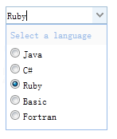

ComboBox
下拉列表框显示一个可编辑文本框和下拉式列表，用户可以选择一个值或多个值
用户可以直接输入文本到列表顶部或选择一个或多个当前列表中的值
如图: 
1.通过< select >元素创建一个预定义结构的下拉列表框。我们要给该元素添加一个“easyui-combobox”的类
2.通过< input >标签创建下拉列表框。我们要给该元素添加一个“easyui-combobox”的类
3.通过javascript创建下拉列表框
可以通过setValue设置组件的值，可以通过setText设置输入的文本
可以通过getValue与getText获取组件的值与输入的文本
真实案例